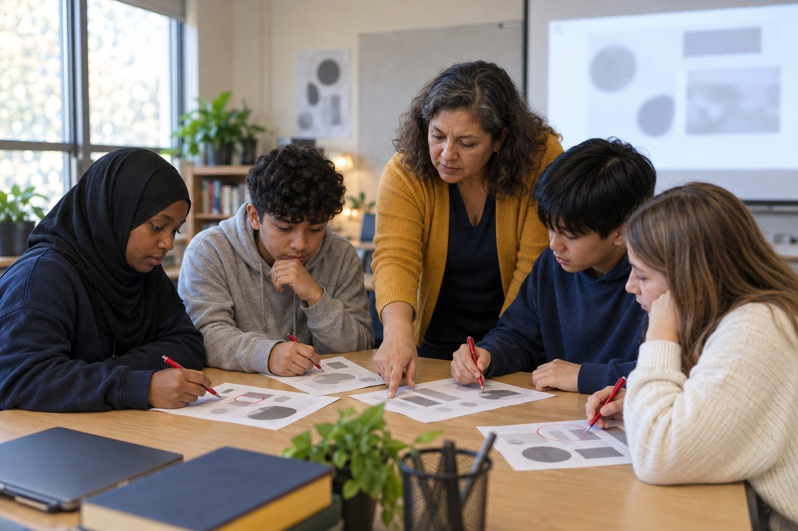

Aprendizaje estudiantilpara Grados K–2
Revisa en dos
Un robot ayudante muy seguro de sí mismo dice cosas que a veces son ciertas y a veces no, y los niños se vuelven dueños de su aprendizaje al revisar cada respuesta en dos lugares antes de creerla.

Todas las actividades Aprendizaje estudiantil
Los estudiantes realizan una tarea de razonamiento a mano y otra equivalente con IA; luego enfrentan un desafío sin notas que revela lo que realmente aprendieron, poniendo en evidencia la descarga cognitiva: cuándo una herramienta te ayuda a pensar y cuándo piensa en tu lugar.
La IA puede darte una respuesta en segundos, lo que parece un avance pero puede hacer silenciosamente el pensamiento que se suponía que debías hacer tú. Esta lección hace visible ese intercambio. Las parejas completan dos tareas cortas y similares de razonamiento: una a mano y otra en la que una IA aprobada hace la mayor parte del trabajo. Inmediatamente después, cada estudiante enfrenta un breve desafío sin notas y sin IA sobre ambos temas, y descubre que generalmente puede explicar y ampliar la tarea en la que se esforzó, pero que se queda en blanco con la que la IA resolvió. La clase nombra este patrón como descarga cognitiva y distingue cuándo descargar es inteligente (una calculadora para aritmética que ya dominas) de cuándo te priva del aprendizaje (dejar que la IA razone algo que estabas tratando de aprender). La postura es equilibrada: la IA no está prohibida ni es mágica. La pregunta con la que los estudiantes se van es la que plantean las ELE: ¿qué evidencia muestra que la herramienta mejoró mi aprendizaje, no solo mi producto?
Enganche
Pregunte: "Si una herramienta te da la respuesta correcta en dos segundos, ¿aprendiste algo?" Tome algunas votaciones y razones. Dígales a los estudiantes que hoy harán un experimento en sus propios cerebros: harán una tarea de la manera difícil y otra de la manera fácil, y luego verán cuál realmente quedó. Prometa que no habrá calificación en las tareas mismas, solo en lo que noten.
Nota para el facilitadorLos estudiantes esperan que les digan que la IA es mala. Subvierta eso: plantéelo como un experimento honesto en el que ellos son los investigadores que estudian su propio aprendizaje.
Explorar
Las parejas completan la Tarea 1 de la Ficha A usando solo su cabeza, sus notas y el uno al otro; por ejemplo, razonando por qué un argumento breve es defectuoso, o resolviendo un problema de varios pasos y explicando cada uno. Circule y escuche la lucha productiva, los comienzos fallidos, los momentos de "espera, no". Dígales que esa lucha productiva es el cerebro haciendo el trabajo.
Nota para el facilitadorElija una Tarea 1 que requiera un razonamiento que los estudiantes puedan hacer, pero no de inmediato. La lucha productiva es el punto; intervenga solo si una pareja está verdaderamente atascada.
Explorar
Ahora las parejas hacen la Tarea 2, una tarea de nivel similar, pero esta vez le piden a la IA aprobada que la resuelva y explique, y simplemente copian el resultado en la Ficha A. Dígales explícitamente: no discutan con la IA ni la mejoren, simplemente dejen que ella haga el pensamiento. Terminarán rápido y se sentirán eficientes. Nombre ese sentimiento en voz alta: "Eso fue rápido. Recuerden cuán poco esfuerzo les tomó."
Nota para el facilitadorResista la tentación de dejar que critiquen la IA aquí; eso volvería a activar su pensamiento. El contraste depende de que genuinamente descarguen esta tarea.
Practicar
Recoja la Ficha A. Entregue la Ficha B: un breve desafío individual, sin notas, sin IA, que le pide a cada estudiante que explique el razonamiento detrás de ambas tareas y resuelva una pequeña variación nueva de cada una. Observe lo que ocurre: la mayoría puede reconstruir la Tarea 1 (la de a mano) y se detiene en la Tarea 2 (la de la IA). Deje que el silencio aterrice antes de la puesta en común.
Nota para el facilitadorEste es el momento de la evidencia. Manténgalo de bajo riesgo y en privado; el objetivo es la autoconciencia, no la vergüenza. Algunos estudiantes se sorprenderán a sí mismos.
Análisis
Puesta en común: "¿Cuál tarea pudiste explicar y ampliar? ¿Cuál se quedó en blanco? ¿Por qué?" Introduzca el término descarga cognitiva: transferir una tarea mental a una herramienta. Luego las parejas trabajan la Ficha C, clasificando ejemplos en descarga inteligente (una app de mapas una vez que ya sabes leer un mapa, una calculadora para aritmética que entiendes) y descarga lamentable (dejar que la IA razone un problema que estabas tratando de aprender a resolver). La regla que construyen: descarga lo que ya dominaste o nunca necesitabas aprender; conserva el pensamiento que es el verdadero objetivo de la lección.
Nota para el facilitadorSostenga el matiz. Descargar no es malo; la sobredependencia de ello para la habilidad exacta que estás tratando de desarrollar es la trampa. Deje que los estudiantes articulen esa línea ellos mismos.
Reflexionar
En la sección inferior de la Ficha B, cada estudiante escribe una regla personal para la IA; por ejemplo: "Cuando estoy aprendiendo algo nuevo, lo intento primero yo solo y uso la IA para verificar, no para empezar", o "Nunca dejo que la IA explique algo sobre lo que me van a evaluar hasta que yo mismo lo haya explicado". Algunos comparten. Cierre con la pregunta de las ELE: "La verdadera prueba no es si la respuesta es correcta, sino si ahora puedo hacer el pensamiento yo mismo."
Nota para el facilitadorImpulse las reglas hacia el cuándo y el cómo, no el si. Una regla como "nunca usar la IA" es poco realista; "hacer el pensamiento primero, luego usar la IA para verificar" es un hábito que pueden mantener.
Ejecútelo completamente sin dispositivos reemplazando la IA en la Tarea 2 con una hoja de respuestas preparada: las parejas copian una solución completa y correcta de una tarjeta en lugar de generarla. El efecto es el mismo: descargan el pensamiento a una respuesta ya elaborada, y luego descubren en el desafío sin notas que copiar no les enseñó. La clasificación y la regla de pensamiento no requieren dispositivos.
Con dispositivos, la IA aprobada hace que la Tarea 2 se sienta auténtica y rápida, lo que fortalece el contraste con el desafío sin notas. Para estudiantes menores de 13 años, ejecute la IA en un proyector; para estudiantes mayores donde esté permitido, un dispositivo compartido aprobado por pareja, sin cuentas personales. El objetivo es dejar que la IA realmente haga el trabajo, y luego estudiar el costo.
¿Necesita una pantalla? El camino digital se gana su lugar al producir la experiencia real y seductora de una respuesta rápida de la IA, para que el desafío sin notas pueda exponer lo que costó. Pero dado que el aprendizaje es el contraste, la versión con la hoja de respuestas preparada enseña la misma lección, que es por qué el camino sin dispositivos funciona igual de bien.
Lo que debería poder ver o recopilar si funcionó.
Los estudiantes comparan una tarea hecha a mano con una hecha por IA y luego ponen a prueba lo que retuvieron, revelando la descarga cognitiva y cuándo una herramienta ayuda o reemplaza su pensamiento.
Los estudiantes anotan su regla de pensamiento en su cuaderno y la aplican en la próxima tarea que los tiente a dejar que la IA empiece el trabajo. En una actividad de seguimiento, la clase revisa las reglas: cuáles se mantuvieron, cuáles eran demasiado estrictas o demasiado laxas, y qué evidencia mostró que la IA ayudó al aprendizaje en lugar de reemplazarlo.